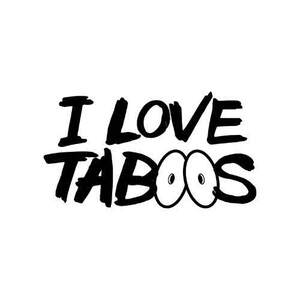
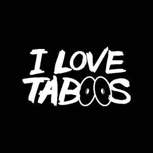

Trade Mark Journal No.2026/008 20 February 2026
UK00004333249 31 January 2026 (18,21,25)
Mark 1

Mark 2

- Class 18
- Bags for clothes; Clothes for animals; Tote bags; Grocery tote bags; Carry-all bags; Bags; Duffle bags; Cross-body bags; Duffel bags; Drawstring bags; Carry-on bags; Canvas bags; Toiletry bags; Leather bags; Sling bags; Leather bags and wallets; Clutch bags; Bags for umbrellas; Souvenir bags; Shoulder bags; Travel bags; Bags for travel; Makeup bags; Waterproof bags; Camping bags; Gym bags; Bags for carrying pets; Hand bags; Make-up bags; Backpacks; Backpacks [rucksacks]; School backpacks; Backpacks for carrying infants; Backpacks for carrying babies; Baby backpacks; Rucksacks; Schoolbags; Luggage bags; Hiking bags; Luggage, bags, wallets and other carriers; Suitcases; Traveling bags; Athletic bags; Carriers for suits, shirts and dresses; Carriers for suits, for shirts and for dresses; Dog parkas.
- Class 21
- Cups; Cups and mugs; Coffee cups; Tea cups; Sippy cups; Compostable cups; Coffee mugs; Mugs; Tea pots; Drinkware; Beverage glassware; Beverageware; Glass mugs; Coasters (tableware); Travel mugs; Tumblers; Pint glasses.
- Class 25
- Clothes; Clothing; Denims [clothing]; Jackets [clothing]; Shorts [clothing]; Aprons [clothing]; Drawers [clothing]; Clothes for sports; Jackets (Stuff -) [clothing]; Headbands [clothing]; Headbands for clothing; Bottoms [clothing]; Gloves [clothing]; Gloves as clothing; Hoods [clothing]; Tops [clothing]; Belts [clothing]; Belts for clothing; Playsuits [clothing]; Knitwear [clothing]; Corsets [clothing, foundation garments]; Silk clothing; Fabric belts [clothing]; Hats; Beanie hats; Bobble hats; Woolly hats; Baseball hats; Fashion hats; Bucket hats; Sun hats; Beach hats; Beanies; Scarves; Scarfs; Snoods [scarves]; Berets; Stuff jackets [clothing]; Knitted gloves; Fingerless gloves as clothing; Jerseys [clothing]; Muffs [clothing]; Shirts; Knit shirts; Golf clothing, other than gloves; Crop tops; Tops; Halter tops; Turtleneck tops; Tank tops; Fleece tops; Maternity tops; Vest tops; Tracksuit tops; Yoga tops; Knit tops; Hooded tops; Knitted tops; Jogging tops; Tube tops; Baby tops; Warm-up tops; Polo knit tops; Top coats; Tracksuit bottoms; Yoga bottoms; Leggings [trousers]; Jogging bottoms; Sweat bottoms; Blouses; Skirts; Gym shorts; Gym suits; Gym boots; Exercise wear; Jogging outfits; Jogging suits; Jogging pants; Gymwear; Jogging sets [clothing]; Warm-up pants; Yoga pants; Jackets; Windproof jackets; Blouson jackets; Fleece jackets; Denim jackets; Sleeved jackets; Leather jackets; Rainproof jackets; Wind-resistant jackets; Waterproof jackets; Sheepskin jackets; Motorcycle jackets; Padded jackets; Ski jackets; Sweat jackets; Fleece vests; Jerseys; Football jerseys; Rugby jerseys; Sports jerseys; Sleeveless jerseys; Volleyball jerseys; Football shirts; Soccer shirts; Sports shirts; Rugby shirts; Uniforms; Sport shirts; Baseball uniforms; Polo shirts; American football shirts; Referees uniforms; T-shirts; Moisture-wicking sports shirts; Short-sleeve shirts; Short-sleeved T-shirts; Long-sleeved shirts; Athletic uniforms; Sports caps and hats; Soccer bibs; Tennis shirts; Tee-shirts; Embroidered clothing; Wristbands [clothing]; Hoodies; Sweaters; Shoes for leisurewear; Sports caps; Sweat shirts; Turtleneck shirts; Golf shirts; Slippers; Pedicure slippers; Ballet slippers; Bath slippers; Leather slippers; Slipper socks; Anklets [socks]; High-heeled shoes; Shoes; Socks; Bed socks; Sandals; Pyjamas; Sneakers [footwear]; Men's socks; Sneakers; Swimwear; Beachwear; Swimsuits; Bikinis; Tankinis; Monokinis; Lingerie; Ready-to-wear clothing; Maternity lingerie; Beach footwear; Shapewear; One-piece playsuits; Sportswear; Men's underwear; Surfwear; Underwear; Men's clothing; Strapless bras; Loungewear; Menswear; Bras; Sleepwear; Bralettes; Sports bras; Jockstraps [underwear]; Briefs [underwear]; Underpants; Sweatshirts; Hooded sweatshirts; Hooded sweat shirts; Hooded pullovers; Camouflage shirts; Short-sleeved shirts; V-neck sweaters; Sweatpants; Shorts; Trousers shorts; Bermuda shorts; Boxer shorts; Swim shorts; Fleece shorts; Boxing shorts; Rugby shorts; Tennis shorts; Pants; Trousers; Tights; Sweatshorts; Denim jeans; Pajamas; Denim pants; Sweat pants; Chino pants; Khakis.
Adeoye Temitope Adeyemi